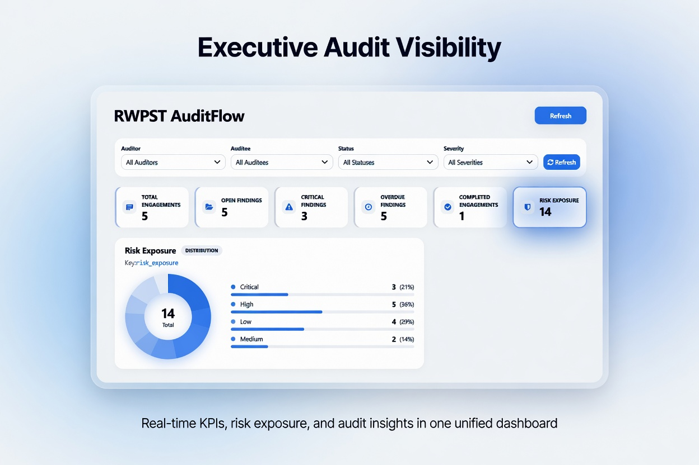
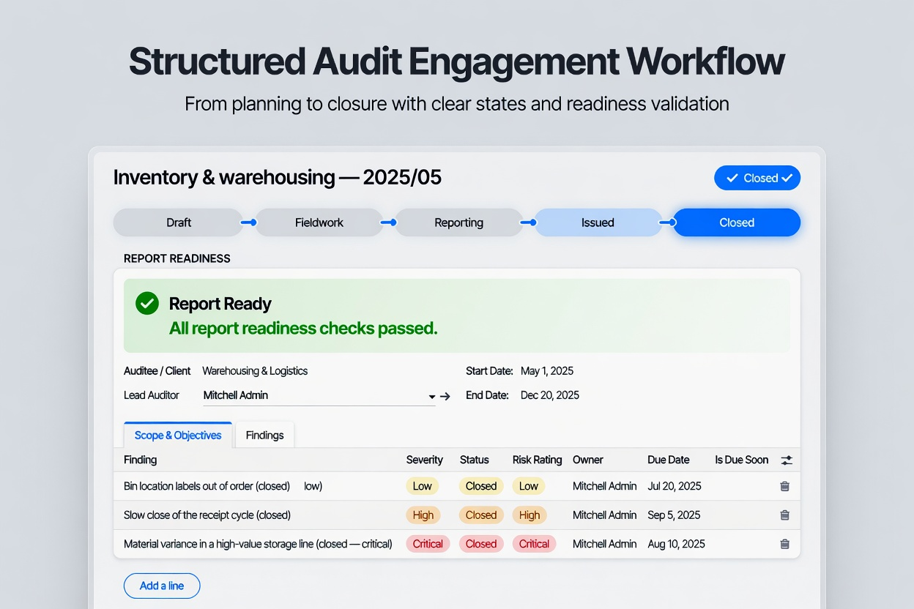
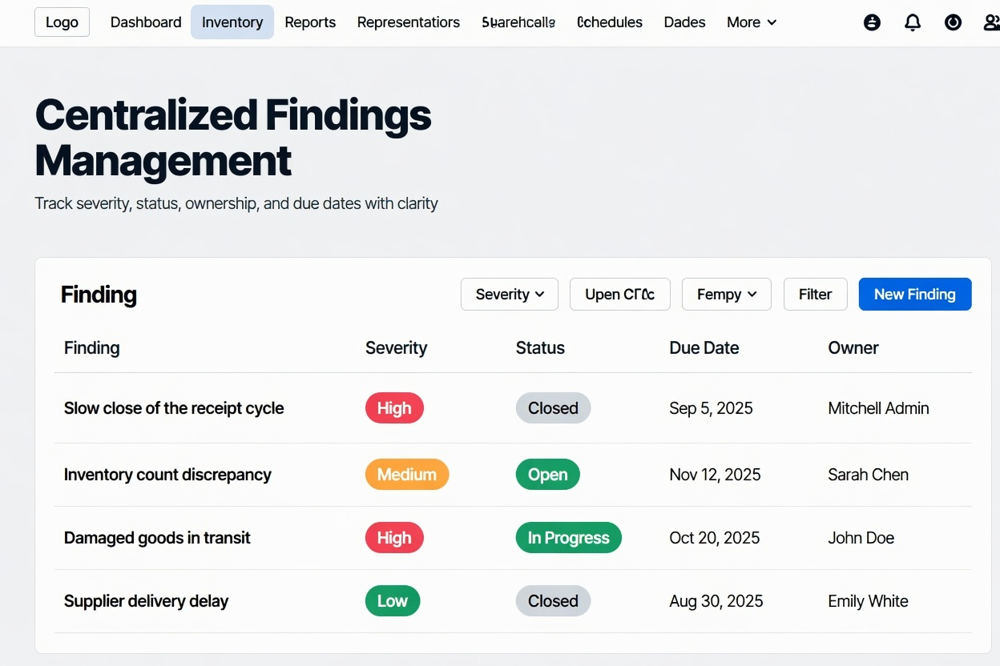
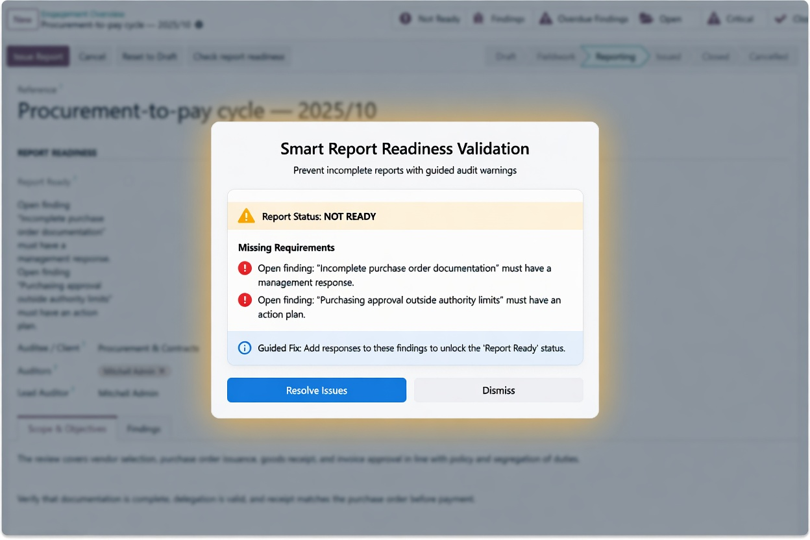

Build 20.0.4.1.0
RWPST Labs · Odoo 20 addon. Internal audit management and executive audit intelligence for Odoo.
Manage audit engagements, findings, report readiness, overdue risks, and executive KPI dashboards inside Odoo — a practical workflow for teams that need visibility from day one.
Features · Demo · Executive dashboard · Screenshots · Workflow · Best fit · Edition comparison · Questions · Support
Standard Edition — practical and ready. RWPST AuditFlow focuses on internal audit workflow, findings follow-up, readiness checks, overdue risks, and KPI visibility. It is not intended to replace a full certified GRC platform. It is a focused audit intelligence layer for teams that want value from day one inside Odoo.
| Topic | Detail |
|---|---|
| Odoo version | Built for Odoo 20. |
| Delivery | Standard Odoo module install. |
| Focus | Engagements, findings, KPIs. |
| Languages | English and Arabic translation-ready. |
The video and poster image live under static/description/ in the module (for example finalDemo.mp4 and video_thumbnail.png).
Demo preview: executive dashboard, engagements, findings, readiness checks, and audit workflow screens.
Built for the way audit work runs.
| Icon | Feature | Summary |
|---|---|---|
| 📅 | Audit engagement lifecycle | Model engagements from draft to closure with clear states, ownership, and traceability. |
| 📝 | Findings management | Track severity, status, actions, due dates, owners, and management responses. |
| ✅ | Report readiness | Check required engagement and finding data before issuing a report. |
| ⚠️ | Warning wizard | Guided warning when a report is not ready instead of a silent dead-end. |
| ⏰ | Overdue findings tracking | Surface non-closed findings past due date so teams can prioritize faster. |
| 📊 | Executive dashboard | OWL KPI summary and filtered charts: bar, trend, and distribution views. |
| 🌍 | Arabic / English ready | Translation-ready structure for English and Arabic in the same Odoo environment. |
The Executive Dashboard shows KPI totals and charts with filters for auditor, auditee, status, and severity.
| Group | Signal | Meaning |
|---|---|---|
| Total | Total engagements | All engagements in scope. |
| Readiness | Not ready | Engagements still missing readiness requirements. |
| Readiness | Report ready | Clear to issue from a completeness perspective. |
| Risk | Overdue findings | Open items past due date. |
| Severity | Critical findings | Highest priority issues for escalation. |
| Status | Open findings | Still in progress or review. |
| Status | Closed findings | Completed loop for reporting and trends. |
Screenshots use relative paths in static/description/.




Each engagement moves from planning to closure in five steps.
| Step | State | Description |
|---|---|---|
| 1 | Draft | Scoping, planning, and team assignment. |
| 2 | Fieldwork | Evidence, testing, and finding capture. |
| 3 | Reporting | Consolidation, review, and issue preparation. |
| 4 | Issued | Report published; responses tracked in Odoo. |
| 5 | Closed | Formal closure of the engagement record. |
| Audience | Value |
|---|---|
| Internal audit teams | Run audit tracking where enterprise data already lives. |
| Compliance teams | Align control testing and evidence with structured engagement and finding records. |
| SMEs | Deploy a focused standard edition without the cost of a full GRC program. |
| Audit consultants | Deliver repeatable audit workflows on a client’s Odoo stack. |
| Topic | RWPST AuditFlow Standard | Full certified GRC |
|---|---|---|
| Core promise | Practical internal audit workflow and KPIs inside Odoo. | End-to-end governance, risk, and compliance with deeper certifications. |
| Deployment | Odoo app install; business-led rollout. | Enterprise program with dedicated GRC operations. |
| Best when | You need structure, follow-up, and visibility quickly. | You need regulatory-grade control libraries and enterprise risk taxonomy. |
Review the demo video and screenshots before installing.
Confirm the standard edition scope: engagements, findings, readiness checks, and executive KPIs.
Use a staging database first, then roll out to production after validating your process and access rules.
Contact the publisher through Odoo Apps if you need implementation support or customization.
No. RWPST AuditFlow Standard Edition is designed for internal audit workflow, findings follow-up, readiness checks, and operational KPIs inside Odoo.
Yes. Plan the rollout like any business application: validate your process, access rules, translation needs, and training.
The module ships with translation support for Arabic and English. Language behavior should be validated during implementation like any other localized Odoo deployment.
Use the publisher contact information on the Odoo Apps listing. This keeps support and pre-sale communication inside the approved marketplace flow.
Use the publisher contact information shown on the Odoo Apps listing or in the app manifest for support, customization, and upgrade questions.
RWPST AuditFlow · Internal audit management for Odoo